iPad
The score beside its full breakdown in wide windows, any orientation, a park in its own window, and parks you can drag onto Plan or the journal.
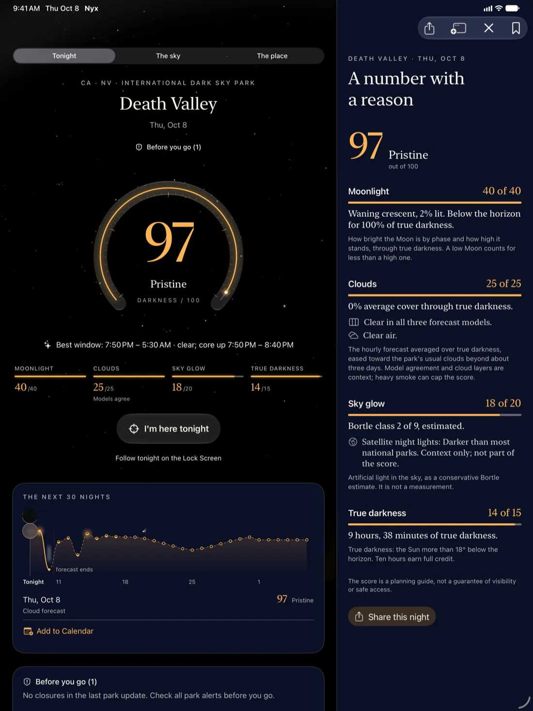
A dark-sky planner for the 63 US national parks
Nyx weighs the moonlight, the clouds, the sky glow and the hours of true darkness for every park and every night, and turns them into one score from 0 to 100. It shows its reasons, puts park closures beside the number, and says what it cannot know.
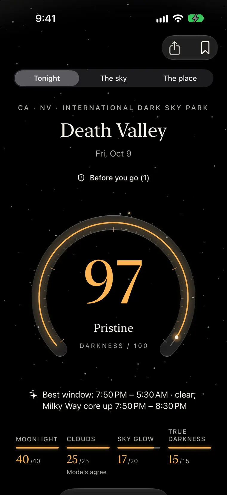
The Darkness Score
Four things decide whether you will see the Milky Way. Nyx adds them up for each park and night, then lets the weakest one hold the total down, because one problem is enough to spoil a night.
How much moonlight reaches the sky through the hours of true darkness, by the Moon's phase and height.
Averaged over the dark hours only. For the coming week, three weather models are compared.
The park's estimated Bortle class, with satellite night lights to show where the glow comes from.
Hours with the Sun 18° below the horizon. In an Alaskan summer there are none, and Nyx says so.
The weakest part can cap the rest. Heavy cloud, a bright sky, wildfire smoke or a short night holds the score down, and Nyx names the cap under the number: "Clouds limit tonight to 55." An overcast night never reads as good.
Score bands:
Tonight
Start from where you are, or from a US city or a park you choose. Nyx shows the best-scoring parks around it tonight, with the reasons on the same screen.
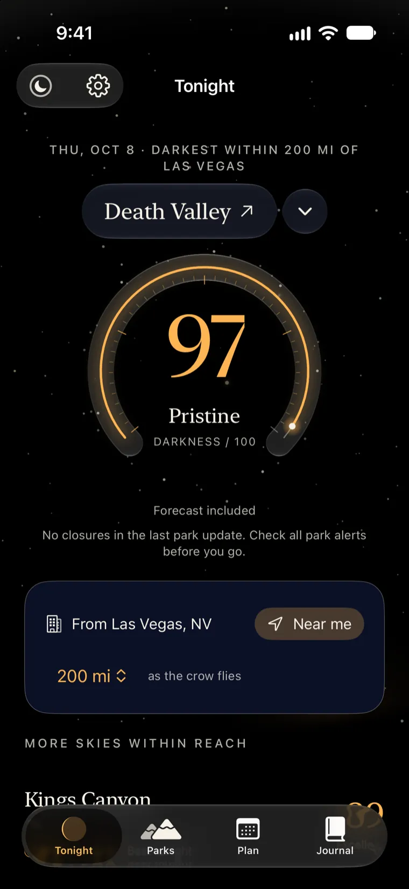
The park, in three chapters
Each park's page reads in three chapters: tonight's score and its best window, the sky and what is in it, and the place itself, with viewing spots, sky glow and where to stay.
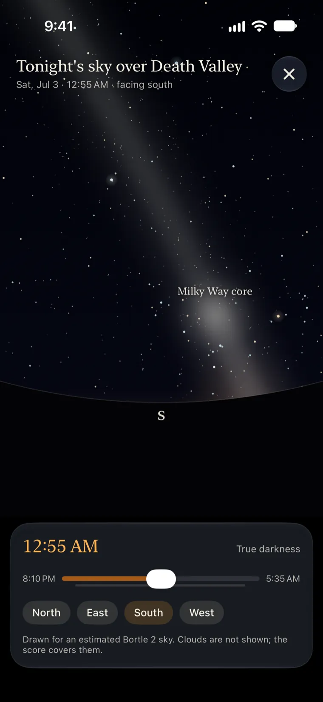
What's up tonight
The galactic core timed for the park you chose, the planets with where and when they rise, meteor showers with an honest rate range, zodiacal light, satellites, and lunar eclipses the park can actually see.
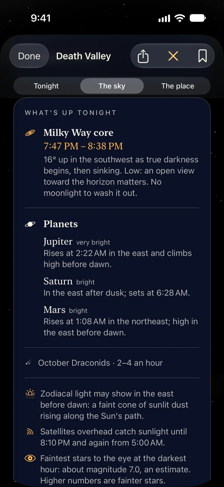
Plan
A month for one park, each night a small sky sized by its score, with the best five nights in a row ringed. Or tell Nyx which nights you are free, and it suggests a park for each.
A forecast is reliable for a few days. After that Nyx leans on each park's usual clouds, so every night shows which it is:
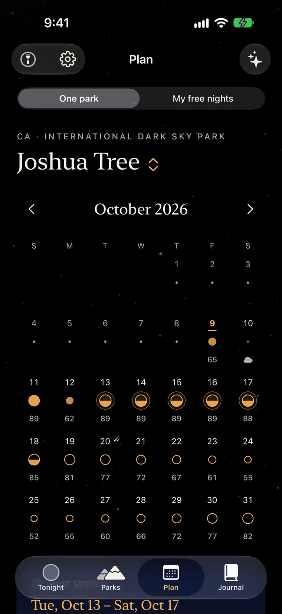
Every park tonight
The Parks tab draws all 63 national parks by tonight's score, from Acadia to American Samoa, with closures marked. Tap a park to open it, or switch to the list.
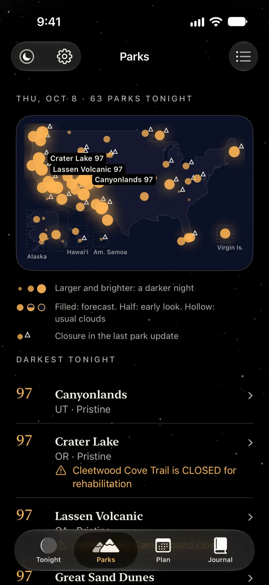
Field mode
Your eyes need twenty to thirty minutes to adapt to the dark, and one glance at a bright screen undoes much of it. Field mode dims everything to deep red, counts down to true darkness and turns the real sky to wherever you point the phone, with no camera.
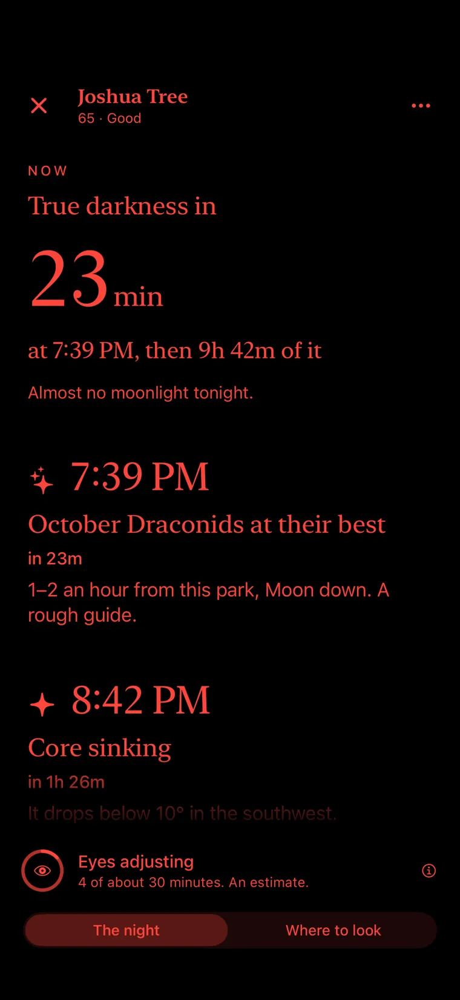
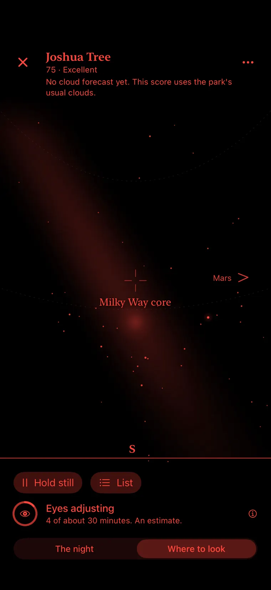
Journal
A private journal turns each night out into a star in your own constellation, and gathers your year under the stars. Add a night by voice with Siri, describe your photos, and export the journal as a file you keep.
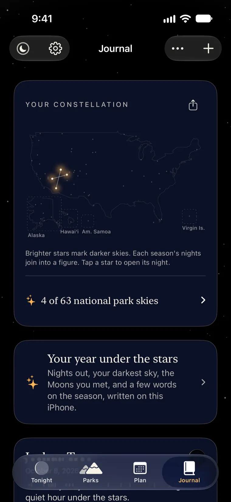
For more people
Every custom control in Nyx speaks a summary of its data. "Listen to tonight" plays the shape of the night as tones, with a transcript, and "Feel tonight" plays it as touch. Audio graphs let VoiceOver users hear a month of darkness.
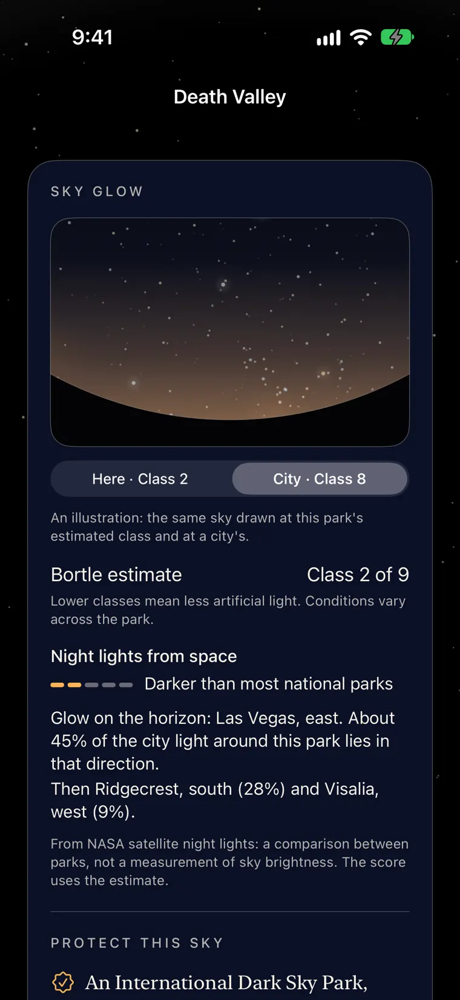
iPhone, iPad, Apple Watch, Apple Vision Pro
The score beside its full breakdown in wide windows, any orientation, a park in its own window, and parks you can drag onto Plan or the journal.

Tonight's score on your wrist, the Digital Crown to look a week ahead, a dark-adaptation clock that taps when your eyes are ready, and a face that turns red at dusk.
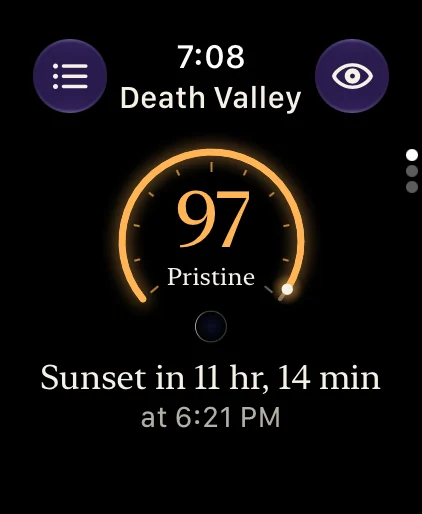
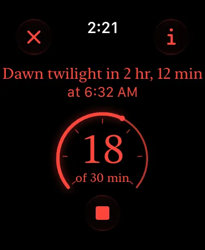
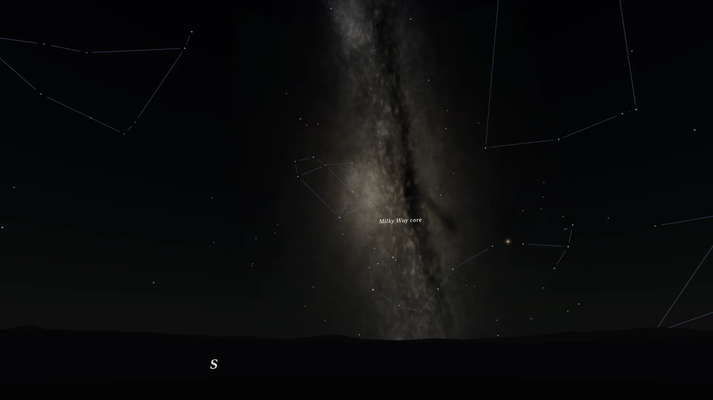
Stand under a park's computed sky on the night you choose, with the forecast's clouds. Tap a star for its name, turn the night by hand, and set the Moon, lit at its true phase, on your table.
On Apple Vision Pro, the Moon from NASA's maps, lit from the Sun's true direction for the night you pick.
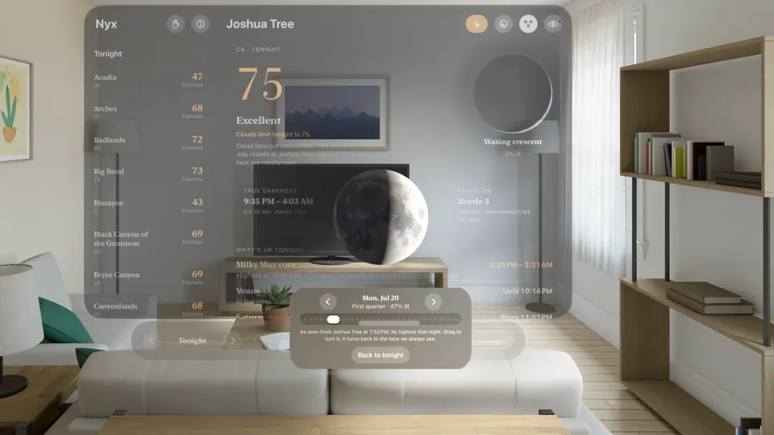
Honest by design
A planning app is only useful if you can trust it, so Nyx draws its uncertainty instead of hiding it.
Models side by side
For the next week, three weather models are compared. When they disagree, Nyx draws the range and says so.
Usual clouds, labelled
Beyond about three days, the forecast eases toward each park's usual clouds for the month, from ten years of climate records, and those nights are marked.
Estimates called estimates
Bortle classes, sky glow and meteor rates carry the word. Moonrise agrees with the U.S. Naval Observatory to within minutes.
Access first
A high score never means a road is open. Closures sit beside the number. If alerts can't load, Nyx says so and links to the park's current conditions.
Privacy
No account, no ads, no analytics, no tracking. The astronomy runs on your device, so the Moon, twilight and the Milky Way work offline. Your journal never leaves your device.
This website is the same: no cookies, no scripts, no analytics.
App Store privacy label
Data Not Collected
Nyx asks three public services for data, and each has its own switch in Settings:
api.open-meteo.comCloud forecasts for all 63 parks, asked for by the parks' public coordinates, never yoursair-quality-api.open-meteo.comSmoke and haze forecasts for the same parksdeveloper.nps.govPark alerts and campgrounds for all 63 parks, and ranger night-sky programs for the park you openFree, with no subscriptions or in-app purchases. For iPhone and iPad with iOS 26 or later, Apple Watch, and Apple Vision Pro.
Screens from Nyx 1.2, the next update; the App Store has 1.1 today, and the four tabs, the parks map and Where to stay arrive with 1.2. Every number in the screens comes from the app's own engine and real forecasts on the day of capture; the journal uses sample entries.